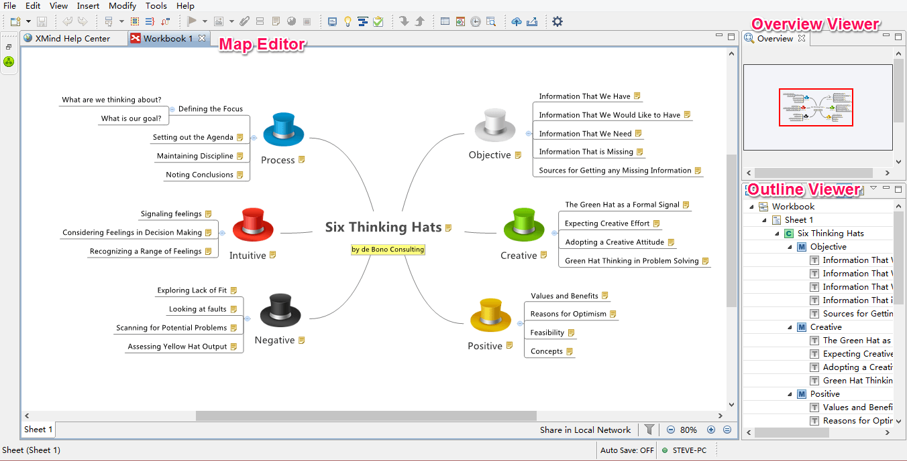
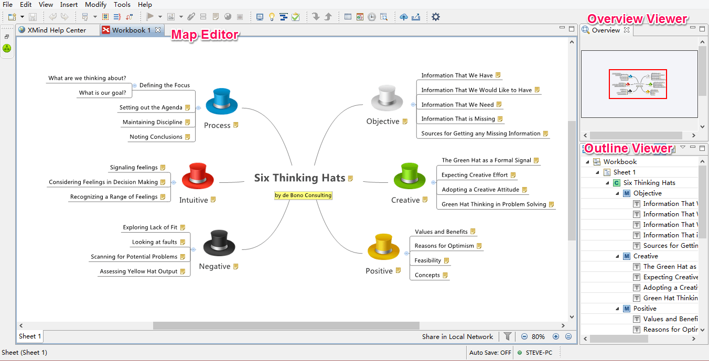

概観
概観ビューは、特に大きくて複雑なマップのナビゲーションを快適にします。それはパンとズームビューアーと呼ばれます。なぜなら、 2 つの機能を持つからです。
- パン マウスの左ボタンを押し、ビューアー内でマウスを動かすと、赤いボックスの範囲がマップ エディターに表示されます。
- ズーム概要ビューアー上でマウスホイールを回転させると、マップエディターで拡大/縮小表示されます。
概観ビューアーとマップエディター

こちらもご覧ください...
概観ビューは、特に大きくて複雑なマップのナビゲーションを快適にします。それはパンとズームビューアーと呼ばれます。なぜなら、 2 つの機能を持つからです。
概観ビューアーとマップエディター

こちらもご覧ください...